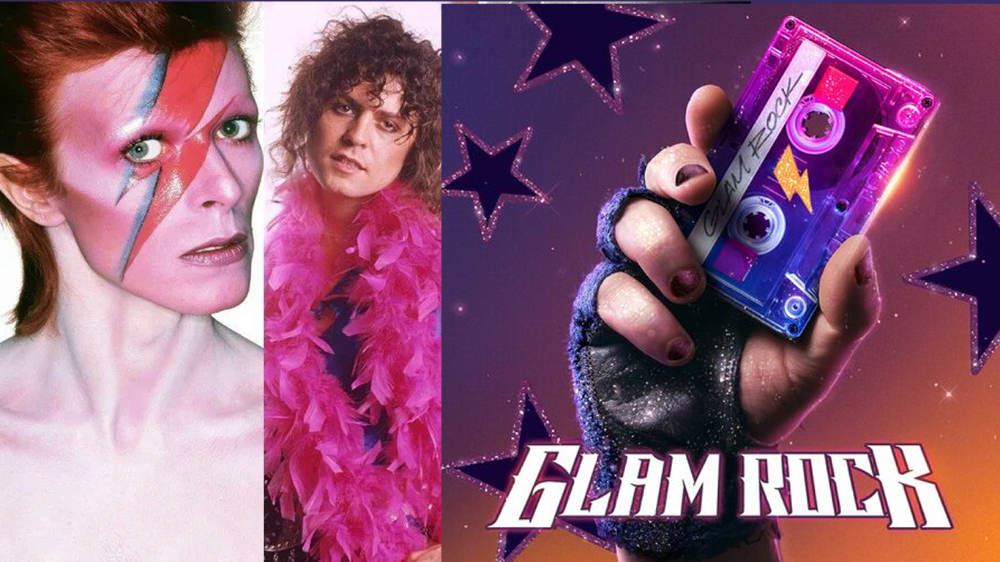

GLAM ROCK
El Glam se divide en dos subgéneros el Glam rock y el Glam metal, el primero en aparecer fue en Glam rock, el cual es originario del Reino Unido, el cual se dio en 1970, hasta principios de los años 80, tiene influencia del Art Rock, Rock and Roll, Jazz, Blues, Pop, Hard Rock, el origen de su nombre proviene de la palabra “Glamour” y los pioneros de este estilo fueron Gary Glitter, Marc Bolan de T. Rex, David Bowie, Sweet e inclusive Queen y Rolling Stone fueron influenciados por este estilo único y glamouroso, el cual combinaron con el hard rock y el rock progresivo.
Los instrumentos más comunes para este tipo de música son la guitarra eléctrica, bajo, batería, saxofón y el sintetizador.
El estilo se originó, buscando la frescura del Rock and Roll, en virtud de que se había perdido esa espontaneidad a raíz del Rock Psicodélico y sus largos desarrollos en la música.
Algunos de los artistas y grupos más destacados del Glam rock son: Motley Crue, Bon jovi, T.Rex, Posion, Roxy Music, Def Leppard, twisted sister.
